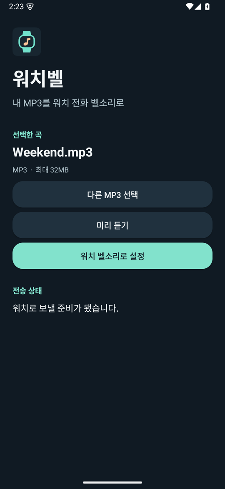
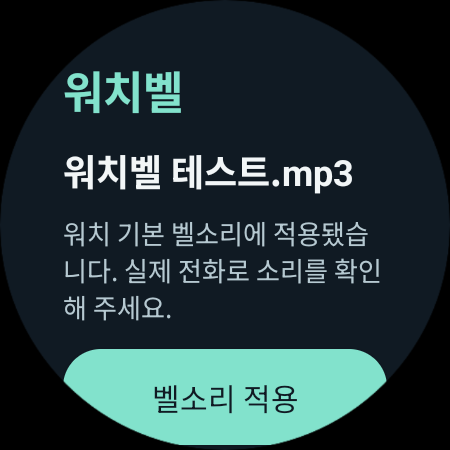

휴대폰에 설치
휴대폰용 APK를 받은 뒤 내 파일 → 다운로드에서 엽니다. 설치 허용 안내가 뜨면 해당 파일을 연 앱에 한해 허용하고 설치합니다.
갤럭시 워치 벨소리
휴대폰에 있는 MP3를 워치로 보내고 기본 전화 벨소리로 지정하세요. MP3를 고르고, 미리 듣고, 워치로 보내면 됩니다.


90초 홍보 다큐
만든 이유부터 설치, MP3 전송까지 한 번에 볼 수 있습니다. 한국어 내레이션과 자막이 포함되어 있습니다.
시작하기
휴대폰용 APK를 받은 뒤 내 파일 → 다운로드에서 엽니다. 설치 허용 안내가 뜨면 해당 파일을 연 앱에 한해 허용하고 설치합니다.
Windows 설치 도우미에서 워치용 APK를 고르고, 연결한 워치에 설치합니다.
버튼으로 설치하는 방법 ↓휴대폰과 워치를 연결하고 워치벨을 한 번씩 엽니다. 휴대폰에서 MP3 선택 → 워치 벨소리로 설정을 누릅니다. 최대 32MB까지 지원합니다.
처음에는 워치의 벨소리 적용을 누르고 시스템 설정 변경을 허용합니다. 워치가 소리 모드일 때 다른 전화로 휴대폰에 걸어 소리를 확인합니다.
Windows PC에 설치 도우미 EXE와 워치용 APK 두 파일을 받습니다. PowerShell을 열거나 Platform-Tools ZIP을 직접 풀 필요가 없습니다.
platform-tools 폴더에 넣은 뒤 그 폴더에서 PowerShell을 엽니다..\adb pair 192.168.0.20:37099.\adb connect 192.168.0.20:38011
.\adb -s 192.168.0.20:38011 install WatchTone-watch-1.0.1.apkGalaxy Wearable에서 연결 상태를 확인하세요. 워치에 워치용 APK를 설치하고 워치벨을 한 번 연 뒤, 휴대폰에서 다시 보내 보세요.
워치에서 워치벨 → 이전 벨소리 복원을 누릅니다.
갤럭시 S24 울트라에서 MP3를 전송했고, 갤럭시 워치4 클래식의 벨소리 목록에서 해당 곡이 선택되는 것을 확인했습니다. 실제 수신음과 휴대폰 Galaxy Wearable 목록 표시는 아직 확인 중입니다.